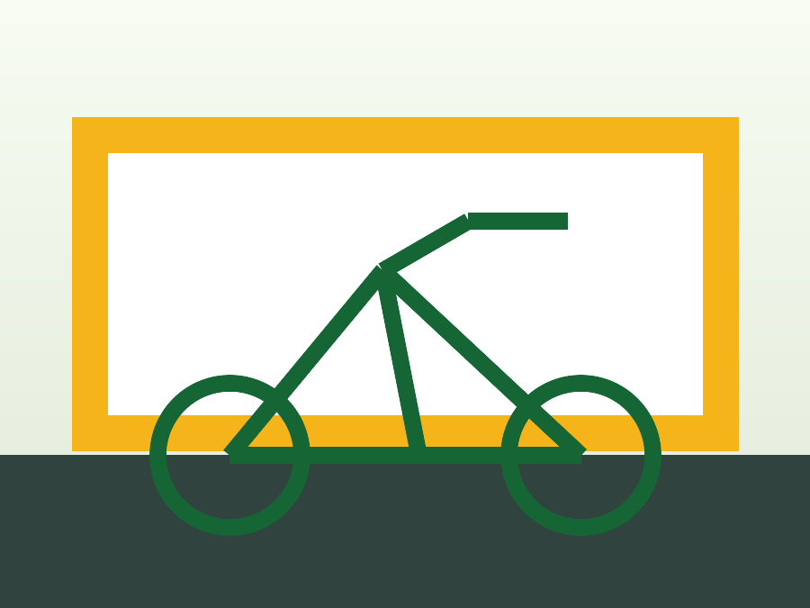
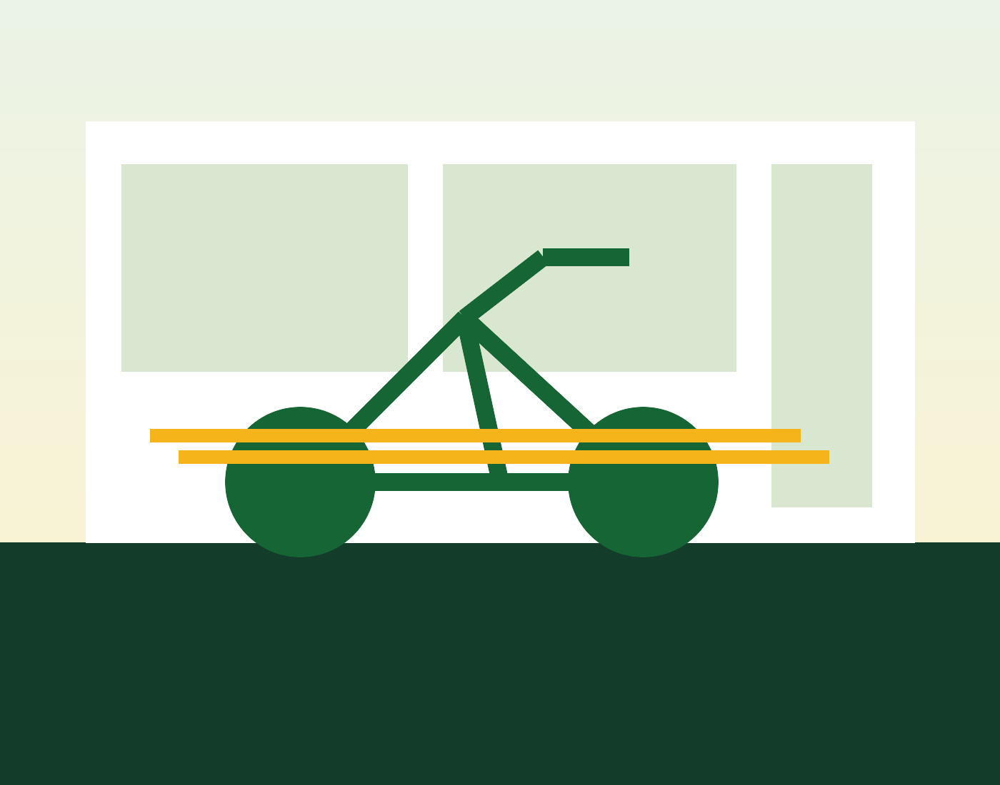

Tienda + taller especializado
Bicicletas listas para la ciudad, la montaña y la vida diaria.
En Almacén de Bicicletas JJ vendemos, ajustamos y reparamos bicicletas con criterio técnico, repuestos confiables y atención clara desde el primer diagnóstico.

Lo esencial, bien hecho
Compra y mantenimiento sin vueltas.
Te ayudamos a elegir la bicicleta correcta, mantenerla segura y mejorarla cuando tu forma de montar cambia.
Revisión rápida
Diagnóstico inicial el mismo día.
Trae tu bici al taller o escríbenos con fotos del problema. Te damos una ruta clara de reparación antes de tocar una sola pieza.
24 hpara diagnósticos simples
+800bicis atendidas al año
6meses de garantía en ajustes
Clientes frecuentes
Para quien pedalea todos los días.
"Me ajustaron frenos y cambios antes de una rodada larga. La bici quedó silenciosa y precisa."
Laura M.
"No intentaron venderme la más cara. Me recomendaron una urbana que sí uso todos los días."
Daniel R.
"Buen diagnóstico, tiempos claros y repuestos explicados sin tecnicismos innecesarios."
Camila P.